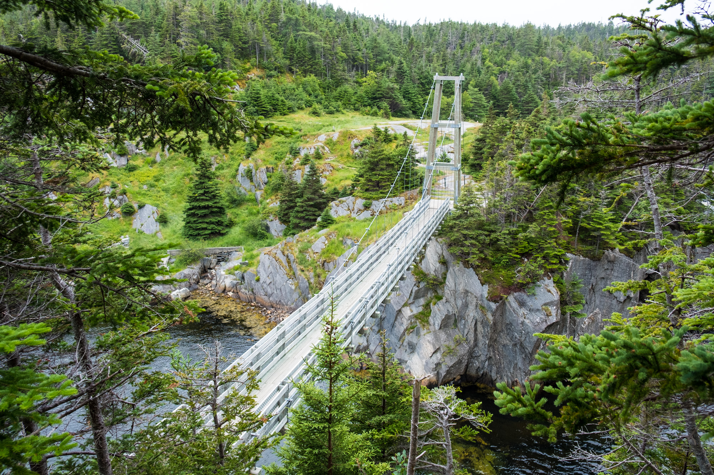
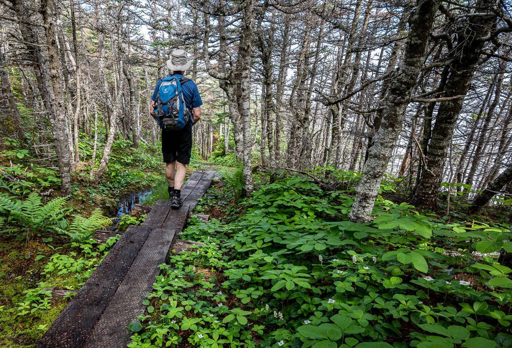
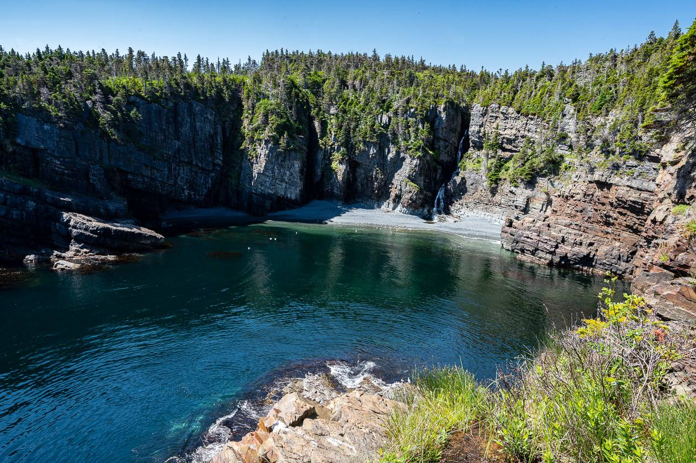

Experience the natural beauty of Newfoundland's rugged coastline with our family two-day hiking package.



This family hiking package includes experienced guides who will accompany you on your journey and provide you with interesting facts and stories about the area's history and geography.
Lunch and snacks will also be provided, so you can refuel and recharge while taking in the breathtaking views of Newfoundland's stunning landscape.
On day one, you'll start your adventure on the Tinkers Point Path route, which takes you from the charming community of Mobile to the scenic Tors Cove. Along the way, you'll be treated to stunning views of the Atlantic Ocean and the surrounding coastline, as well as the chance to spot wildlife such as whales and seabirds. This hike is perfect for novice hikers, with a total distance of approximately 5 km.
On day two, you'll tackle the La Manche Village Path route, which takes you from Tors Cove to the historic La Manche Village. This hike is slightly longer than the previous day, at approximately 6.4 km, but still suitable for novice hikers. Along the way, you'll cross over beautiful suspension bridges and pass by crystal-clear streams and waterfalls. At the end of the trail, you'll have the opportunity to explore the remains of the abandoned La Manche Village, which was destroyed by a tsunami in 1929.